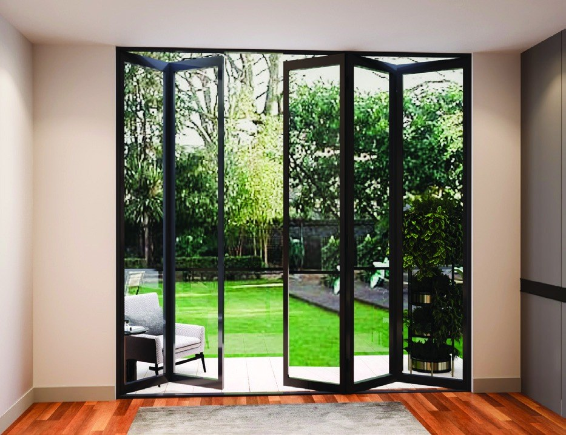
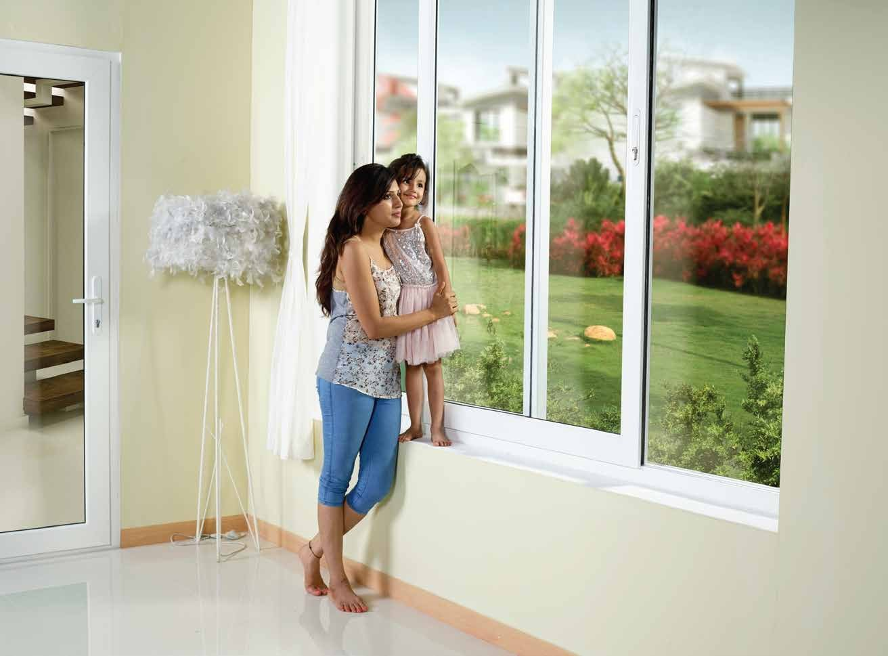
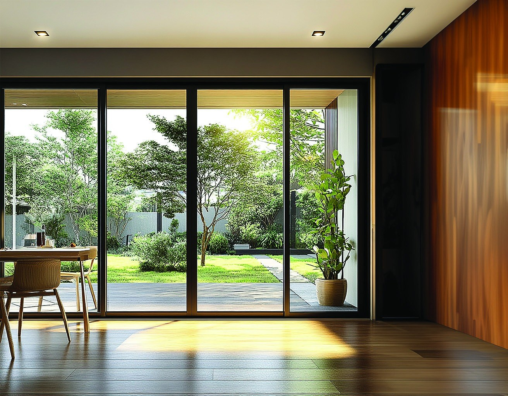

Peace of mind
Choose uPVC if you want…
- Quiet rooms — up to 40 dB noise reduction
- Cooler rooms and lower air-conditioning load
- No painting, polishing or rust treatment
- Weather-proof frames tested for 25,000+ hours
Our products
Multi-chambered uPVC for comfort and quiet. Slim 6063-T6 aluminium for light and architecture.
The short answer
Choose uPVC when comfort and low maintenance come first; choose aluminium when you want slim frames, large glass and an architectural look. Many homes use both — uPVC in bedrooms and noisy rooms, aluminium for living-room and balcony glazing.
Peace of mind
Piece of art
Annual production capacity at our Coimbatore plant
Manufacturing since — over a decade of extrusion experience
Cities served across 28 states in India
Hours of weather-ability testing on our profiles
Popular configurations
A few of the ways Prominance windows and doors are used — tap any to talk to our team.
 uPVC
uPVCThe tightest seal of any window style — made for busy roads.

AluminiumFold the whole wall away — openings up to 2.4 metres.

uPVCNothing swings into the room — space-saving sliders.

AluminiumFrames concealed on every side, so the landscape takes over.
 uPVC
uPVCTilt for secure ventilation, or turn fully open to clean.
 Aluminium
AluminiumMore glass, more light and clean lines.
Compare
An honest side-by-side of the two Prominance systems.
| Feature | uPVC | Aluminium |
|---|---|---|
| Look | Clean, solid; white and wood-finish options | Slim sightlines, sleek premium finishes |
| Frame material | Multi-chambered uPVC, 2.3–2.5 mm walls | 6063-T6 aluminium alloy |
| Heat & noise | Multi-chambers insulate; up to 40 dB reduction | Depends on glass and thermal design |
| Maintenance | Wipe clean — no painting | Low — wipe clean |
| Large glass spans | Good | Excellent |
| Warranty highlight | Tested for 25,000+ hours of weather-ability | 25 years against surface corrosion |
| Best for | Bedrooms, living rooms, noisy roads | Large glass walls, balconies, contemporary design |
Both systems are made by Prominance in Coimbatore and installed by our own team. uPVC details Aluminium details
Inside the factory
Both systems start in the same place — our Coimbatore plant, where profiles are blended, extruded and tested in-house.

Rows of European-technology extruders, one standard.
Coimbatore, Tamil Nadu · 22,000 MT a year01
PLC- and SCADA-controlled batching ensures accurate weighing, mixing and temperature control for a consistent blend.
02
In-house die design and specialist maintenance keep high-grade steel tooling production-ready and dimensions precise.
03
Imported extruders, advanced calibration and purified chilled water deliver consistent profiles with accurate dimensions.
04
European and Japanese lab equipment supports EN 12608 testing, backed by in-house R&D, 3D printing and prototyping.
Answers
Neither wins everywhere. Choose uPVC for bedrooms, living rooms and busy roads, where heat and noise insulation and zero maintenance matter most. Choose aluminium for large glass walls, balcony sliders and contemporary design, where slim frames and wide spans matter most. Many homes use both.
uPVC frames are multi-chambered plastic profiles that insulate well and never need painting. Aluminium frames are metal extrusions that are strong enough to be very slim, so they allow bigger glass. Prominance makes both, and our team can recommend a mix for your home.
Multi-chambered uPVC with tight seals and the right glass reduces outside noise by up to 40 dB. Aluminium can also perform well when paired with laminated or double glazing. Tell us about your road or neighbourhood and we will recommend a specification.
Yes. Prominance profiles are blended, extruded and tested in-house at our Coimbatore plant, with EN 12608 testing, so quality is controlled from raw material to finished window.
We serve 28 states and 860+ cities across India. One team handles measurement, manufacture and installation.
Request a free consultation using the form on this page or call 1800 833 4500. We will understand your openings and send a written quote.
Let’s build something better
Not sure whether uPVC, aluminium or a mix is right? Our team will help you choose the right systems, configurations and finishes for your space.